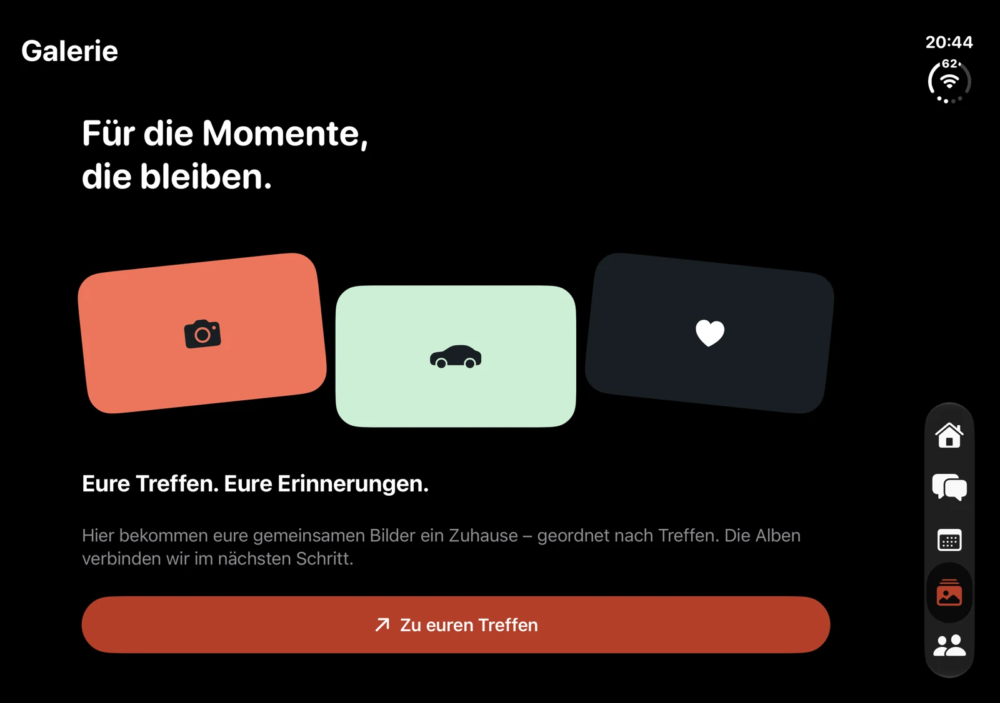
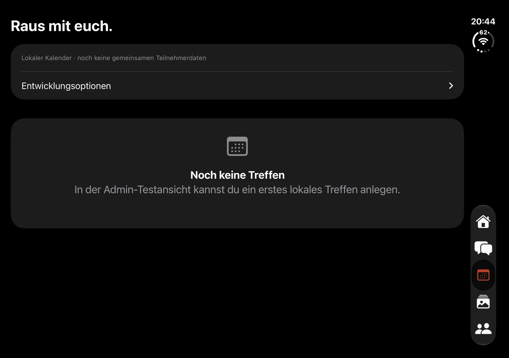

Profil & Fahrzeuge
Ein eigenes Profil mit freiwilligen Angaben und Bild anlegen. Fahrzeuge mit Marke, Modell, Baujahr, Farbe, Leistung, Umbauten und ausgewählten Fotos auf dem Gerät verwalten.
MCA · EIN PROJEKT VON NW VISUALS
Die App für eine private Auto-Crew: Fahrzeuge vorstellen, Treffen planen und Bilder passend zum Termin sammeln. Eine feste Gruppe, offen für alle Marken.
iOS 0.12.0 · Build 24 · Gemeinsame Treffen im geschlossenen Pilot.

01 / DAS PROJEKT
Profil, Garage und Fotoalben sind lokal nutzbar. Auf dem iPhone kommt ein privater Crew-Kalender im Pilot hinzu.
Ein eigenes Profil mit freiwilligen Angaben und Bild anlegen. Fahrzeuge mit Marke, Modell, Baujahr, Farbe, Leistung, Umbauten und ausgewählten Fotos auf dem Gerät verwalten.
Adresse eingeben und einen Vorschlag übernehmen. Treffpunkte lassen sich direkt in Apple Karten oder Google Maps öffnen. Ein bestätigter Kalenderexport übergibt Zeit, Ort und Beschreibung an den Systemkalender oder Google Kalender.
Die Chat-Oberfläche lässt sich ausprobieren. Nachrichten werden noch nicht an andere Mitglieder versendet und bleiben nur bis zum App-Neustart erhalten. Es gibt noch keine Live-Anwesenheit oder echten Lesebelege.
Eigene Bildkopien in lokalen Alben sammeln, als Raster ansehen, groß öffnen und einzeln löschen. Die Originale bleiben in der Fotomediathek. Gemeinsame Online-Alben und echte Mitgliederprofile benötigen noch die Serveranbindung.
02 / APP-AUFNAHMEN
Originalaufnahmen vom 31. Oktober 2026 zeigen das Galerie-Konzept und den lokalen Kalender vor den neuen Albumfunktionen. Sie geben einen Einblick in die Gestaltung; aktuelle Albumaufnahmen folgen.

03 / ENTWICKLUNGSSTAND
iOS 0.12.0 / Build 24 führt „Gemeinsame Treffen“ im Treffen-Tab. Der lokale Entwicklungsstand für Android läuft separat. Adressvorschläge und die Übergabe an Karten- und Kalenderdienste sind Teil der App.
Für den iOS-Pilot sind Einmalcodes, Admin-Freigabe, Terminverwaltung und Zu- oder Absagen pro Konto umgesetzt. Der Pilot setzt einen eingerichteten privaten HTTPS-Testdienst voraus. Gemeinsamer Chat, geteilte Fotos und Push bleiben in Entwicklung.
Die App wird für eine private Crew entwickelt. Build 24 ist als Quellstand dokumentiert. Die Freigabe im Store und der Gerätetest des Piloten stehen aus.
FRAGEN ZUM PROJEKT?
Informationen zum Entwicklungsstand, zu lokalen Daten und zur Löschung.